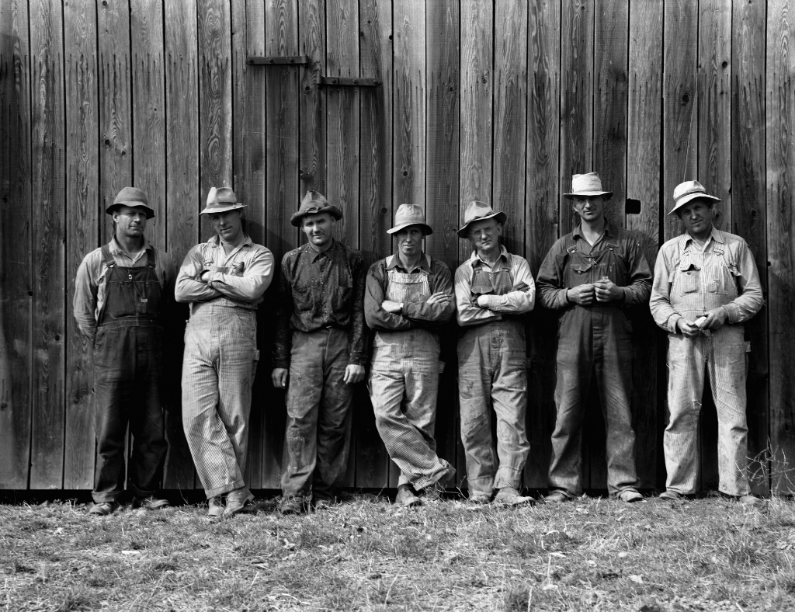
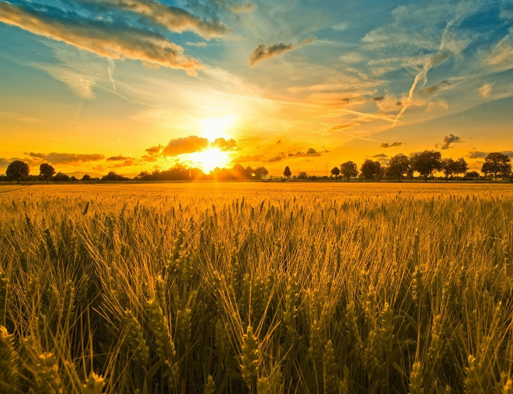
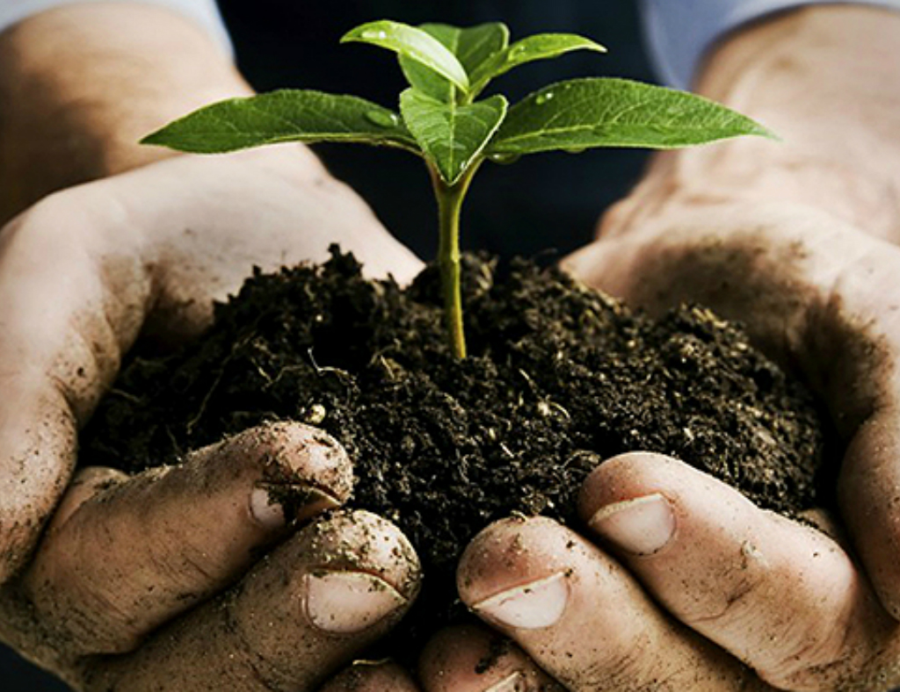

L'inizio dell' avventura
 Ci troviamo nel 1945 quando Ermenegildo
Cavallin, contadino e reduce dalla guerra, riceve in eredità da parte di un lontano parente un lotto di
terreni nel territorio Veneto. Ermenegildo sfruttando il terreno ereditato, situato nella zona di Vicenza,
inizia a costruire la propria tenuta con lo scopo di adibirla alla coltivazione di grano. I lavori procedono
secondo i piani e terminano nel Febbraio del 1946, anche grazie all'aiuto di alcuni amici di vecchia data
di Ermenegildo che, in seguito all'apertura dell'azienda, avrebbero lavorato per lui. Il 23 Marzo del 1946
è la data in cui viene fondata l'Azienda Agricola Cavallin, un'azienda che poggia sulle basi dell'amore
per la terra e la natura.
Oggi e domani
 L’Azienda Agricola Cavallin vanta
oggi un terreno coltivato di circa 25 ettari (75 campi veronesi) a Castelcerino, in corpo unico coltivato
prevalentemente a Garganega, ma anche a Trebbiano di Soave e Chardonnay, oltre alle uve a bacca rossa di
Merlot, Cabernet Franc e Cabernet Sauvignon. I vigneti, sempre soleggiati e ventilati, sono circondati
da ulivi secolari, ciliegi e boschi. Tutti i terreni a conduzione biologica, di proprietà della famiglia,
sono gestiti con cura e attenzioni quotidiane direttamente da Alberto Coffele, responsabile della produzione,
ed è il risultato dell’opera di salvaguardia e conservazione di Giuseppe Coffele, che già a partire dagli
anni Settanta fu il primo vinificatore privato della zona del Soave Classico a credere nei cru di Castelcerino.
Sono i vigneti con maggior altitudine della zona del Soave Classico (fino a 400 m s.l.m.) e si trovano
nella parte più a nord del Comune di Soave. L’esposizione è a sud-sud/ovest e presenta delle differenze
notevoli tra i suoli più a sud (calcarei) rispetto a quelli più a nord (basaltici). I primi danno una maggiore
acidità, finezza e longevità, mentre i suoli vulcanici più scuri danno maggior struttura e complessità.
La presenza di una grande area boschiva (la più estesa all’interno di tutta la Doc) influenza il microclima
fornendo una mitigazione degli eccessi di calore estivo e favorisce pertanto il mantenimento di buone acidità.
La costante presenza di venti da nord conserva il buono stato sanitario delle uve favorendo molto la gestione
di un vigneto bio. La fertilizzazione del terreno, fondamentale per non depauperarlo nel corso degli anni,
è effettuata esclusivamente con la sostanza organica prodotta in proprio dall’azienda, di cui si conosce
quindi perfettamente l’origine. I cavalli della tenuta, infatti, si nutrono principalmente del foraggio
prodotto in azienda. È bene sottolineare quanto sia importante la sostanza organica del terreno sia per
la sua naturale fertilità sia per la sua struttura (aspetti fisici). Tutti gli elementi nutritivi presenti
nel terreno non sono ben assimilabili dalle piante se non è presente una buona quantità di sostanza organica.
Essa è apportabile solo tramite il letame. Come noto, oggigiorno, le aziende agricole non hanno più animali
e la zootecnia è in forte crisi, è quindi sempre più difficile reperire del buon letame. Oltretutto gli
allevamenti rimasti utilizzano sempre più medicinali ed estrogeni per i propri animali, che inevitabilmente
si ritrovano nelle loro deiezioni. A fronte di tutto ciò ecco quindi la ricchezza di poter ottenere, all’interno
della propria azienda agricola, della sostanza organica prodotta da animali allevati direttamente. La sostanza
organica del terreno non è eterna, può venire mineralizzata e, quindi, distrutta. Nessuna forma di agricoltura
può prescindere da essa. Sono diversi i motivi per cui Alberto Coffele ha scelto di dare al cavallo un
ruolo attivo all’interno della vigna. Una volta selezionato il cavallo giusto per prestanza fisica e carattere,
questo animale può infatti essere utilizzato in tutte le lavorazioni del vigneto: questo con un indubbio
vantaggio dal punto di vista dell’impatto ambientale, e con sempre maggior efficacia e miglior resa da
un punto di vista tecnico-agronomico. Il cavallo, infatti: Non inquina. Per svolgere il proprio lavoro
non necessita di combustibili fossili (tra i maggiori responsabili dell’inquinamento ambientale e del global
warming) e non inquina a livello acustico: è decisamente apprezzabile lavorare nella natura evitando il
rumore assordante di una trattrice. Contrasta le malerbe e nutre il terreno in modo naturale. Cibandosi,
almeno in parte, del foraggio prodotto in azienda e delle malerbe del vigneto (in primavera e dopo la raccolta
quando non sono presenti residui di trattamenti), produce un ottimo letame qualitativamente più ricco di
quello bovino, chiudendo pertanto un ciclo biologico completo nell’azienda agricola. Impedisce la compattazione
del suolo, contrariamente a quanto accade con il passaggio continuo di una trattrice sul terreno. Le trattrici
più piccole possono pesare 20 quintali e passano decine di volte l’anno in un vigneto rendendone il terreno
sempre più compatto e distruggendone la tessitura e la struttura, ovvero ciò che ne regola le proprietà
chimiche e fisiche. Al contrario, un cavallo può pesare in media 8 quintali e distribuisce il proprio peso
sugli zoccoli e non su tutta la superficie, ben maggiore, delle ruote, come avviene per le trattrici. Oggi
la compattazione dei suoli agricoli sta distruggendo lentamente, ma inesorabilmente, ogni forma di vita
del terreno, che porta necessariamente a una lavorazione ancora una volta meccanica – la “ripuntatura”
meccanica profonda del terreno per arieggiarlo – che non sarebbe necessaria con la reintroduzione del cavallo
nelle lavorazioni del vigneto. Permette molte lavorazioni eco-compatibili che, seppur più onerose in termini
di tempi di realizzazione, possono essere accolte con favore da aziende già sensibili a una viticoltura
più sostenibile e mirata ad ottenere vini di qualità superiore, attenti alla salute del consumatore. Per
avvicinare il mondo cittadino a quello della campagna Ai Prà azienda agricola caseificio Padova à è felice
di trasformarsi anche in un laboratorio naturale dove le scolaresche, previa prenotazione, potranno vivere
una giornata alla scoperta dei lavori agricoli e trasformarsi per qualche ora in allevatori e coltivatori
in erba. Si tratta sicuramente di un’occasione unica per gli insegnanti che avranno materiale su cui poter
lavorare. Per i ragazzi, invece, potrebbe forse rappresentare la giusta opportunità per scoprire una passione
da trasformare, in futuro, in un lavoro.
Agricoltura biologica
 Coltivare biologico significa non sfruttare
le piante e il terreno per ottenere grani di ottima qualità, ricchi di gusto, i quali vengono coltivati
in azienda secondo la più antica tradizione contadina, avvalendosi però di attrezzature all’avanguardia
che permettono di ottenere un prodotto finale eccellente e salubre con ottime proprietà nutritive.